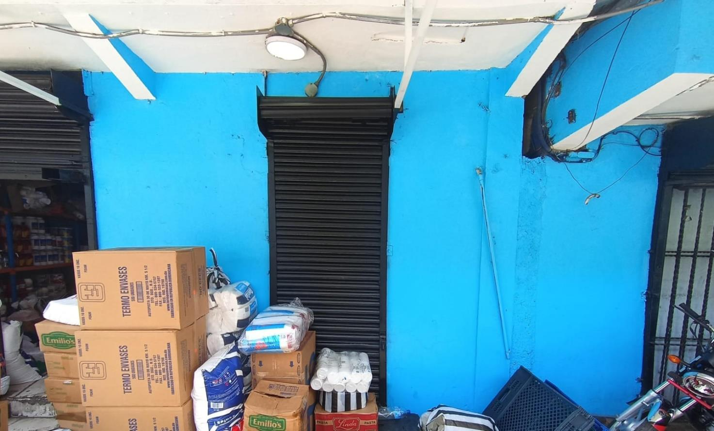
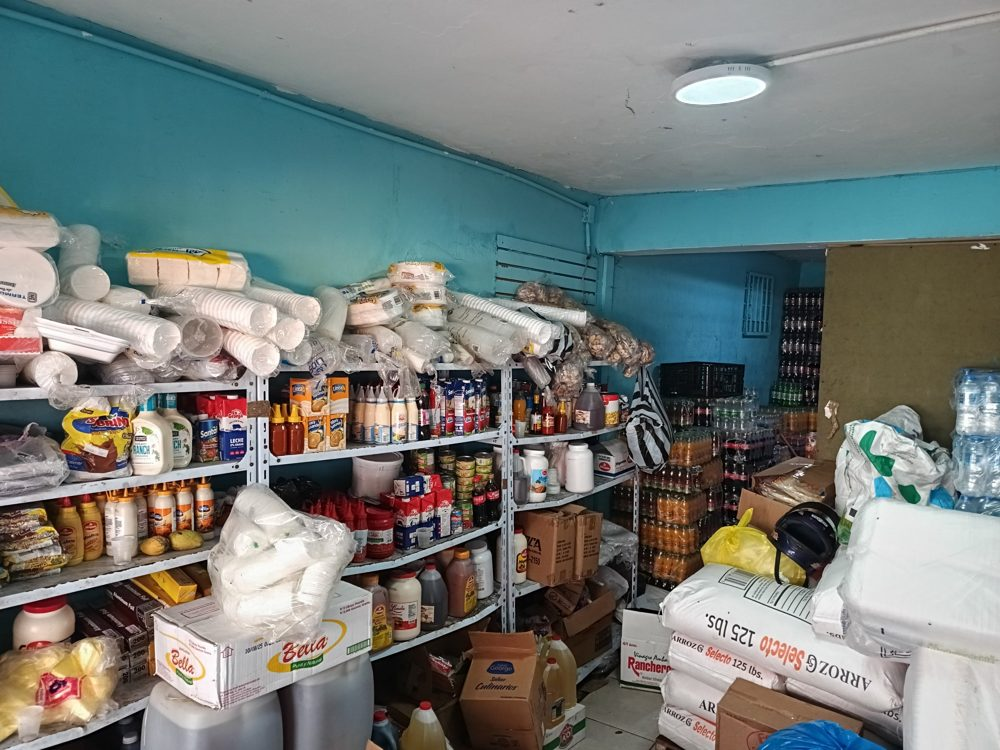

Sistema restaurado. Estado: vulnerable pero vivo.
Nos borraron. Volvimos.
Una noche, la página, las redes y hasta el nombre de Surtidora Binet dejaron de aparecer en internet. Esto es lo que encontramos y lo que reconstruimos, más fuerte.
“Tu negocio ha sido borrado de la existencia digital. Si quieres recuperarlo, deberás reinventarlo.”
Cronología del incidente
-
Todo se ve normal
Cierran las 8:00 p. m. entre semana. Los pedidos por WhatsApp siguen entrando y surtidorabinet.do carga sin problema.
-
La página desaparece
El dominio deja de resolver. Los buscadores responden “sin resultados” a quien busca la surtidora.
-
Las redes se vacían
Se borran publicaciones, fotos y catálogo. Nadie recibió aviso de que alguien había entrado.
-
El USB
Al abrir el local aparece una memoria USB sobre el mostrador con un solo archivo de texto. Nadie recuerda quién entró.
-
Empieza la reconstrucción
Decidimos no pedir permiso para existir. Reconstruimos todo con copias de seguridad y sin depender de una sola cuenta.
Lo único que no pudieron borrar
Nos quitaron la página, pero el local de Villa Mella seguía en pie, con los estantes llenos y los clientes de siempre tocando la puerta. Eso nos recordó para qué existimos: que tu colmado o tu negocio de comida no se quede sin embutidos, salsas ni desechables.


Volvimos con copias de seguridad, verificación en dos pasos y varios canales para que nos encuentres aunque uno falle.
Revisa las pruebas del incidente